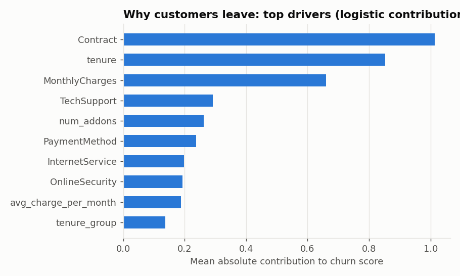
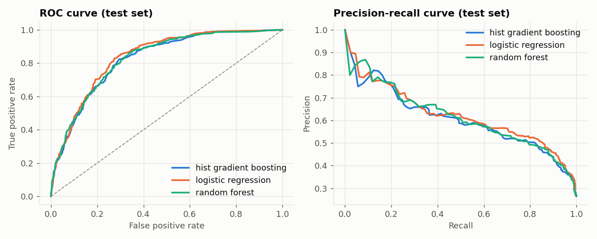
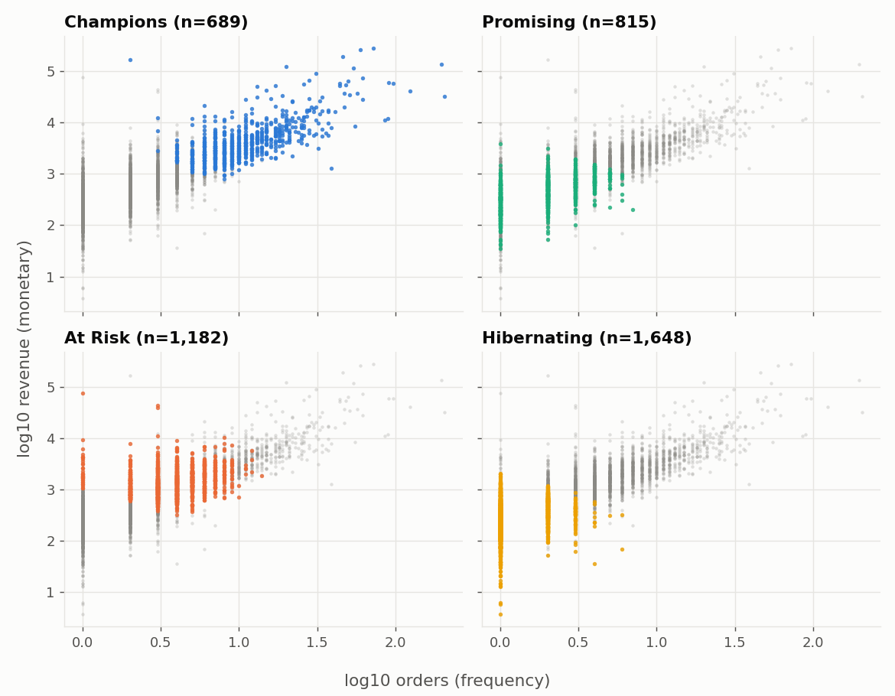
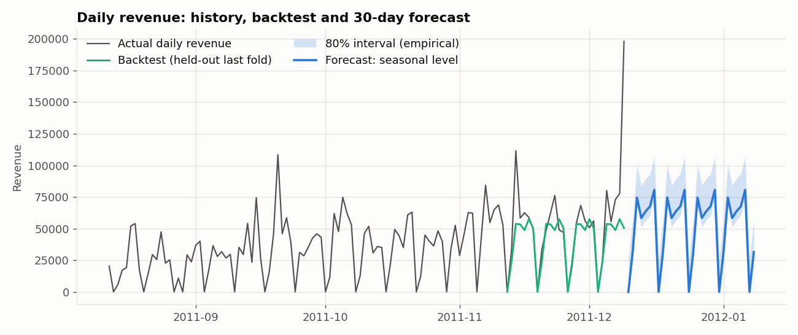
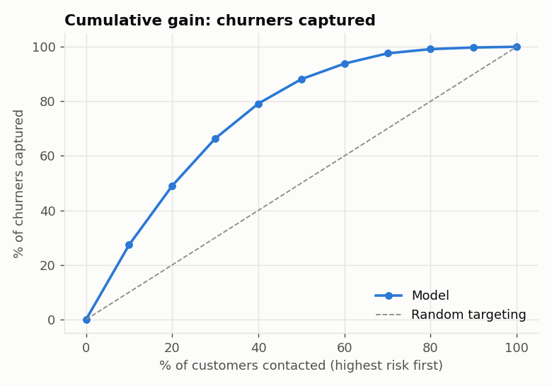

01 · Explain
See what moves risk
Calibrated churn probabilities, global drivers, and plain-language reasons for individual scores.
An explainable analytics lab for customer churn, retention economics, customer value, and revenue forecasts. Turn model outputs into decisions you can inspect—not just scores you have to trust.
Your source app is app/Home.py · seven Streamlit pages · use the deploy button to publish your dashboard

Each view answers a different business question, with the data, model behavior, and caveats kept visible.

Calibrated churn probabilities, global drivers, and plain-language reasons for individual scores.

RFM profiles reveal how Champions, Promising, At Risk, and Hibernating customers differ.

Compare a 30-day forecast with rolling backtests and an empirical uncertainty interval.
The Python app in this repository is the interactive product. Each page is backed by saved analysis outputs, so visitors can explore the demo without running the training pipeline on every page load.
Compare active-customer churn, annualized revenue exposure, campaign economics, retail segments, and the next-30-day forecast in one view.
Filter and rank customers by calibrated churn probability, inspect the strongest available reasons, export a review list, or score a hypothetical customer.
Compare global model drivers with permutation importance, contract and tenure patterns, review themes, and practical retention questions.
Explore RFM profiles, K-Means and DBSCAN diagnostics, retail cohorts, segment-level customer value, and representative customers.
Review daily revenue history, rolling-origin backtests, model comparisons, and a 30-day forecast with an empirical uncertainty band.
Inspect sentiment model quality and influential terms, browse scored demo reviews, and try the live text-scoring form.
Browse named SQL analyses for churn, revenue, repeat purchases, and cohorts; explore results with a read-only query interface.
To open your own hosted app, deploy this repository to Streamlit Community Cloud from the button below. GitHub Pages serves this project overview; it does not run Python.
Change the assumptions and see how a simple expected-value rule responds. This is a per-customer illustration—not a claim that an offer causes a save.
Positive under these assumptions. Validate with a controlled experiment.
The example project uses a 30% save rate, 60% gross margin, and $60 offer cost. Change any input above; a model score is not a treatment effect.
On the held-out Telco test subset, the expected-value policy contacted 422 customers, reached about 65.7% of churners, and estimated $18.5k net benefit. Contacting everyone lost an estimated $25.8k under the same assumptions.
These are model-based estimates on synthetic records—not a causal experiment or a promised return. The dashboard compares the policies and exposes the underlying assumptions.

Reproduce the example locally, inspect the source, then replace the demo inputs with data you are authorized to use.
Install the training requirements and run the data, SQL, model, and forecast pipeline from the README.
Open the seven-page Streamlit app to filter churn scores, inspect segments, and test a hypothetical customer.
Review calibration, backtests, dataset boundaries, and the configurable business assumptions before acting.
Connect this repository to Streamlit Community Cloud and deploy app/Home.py.